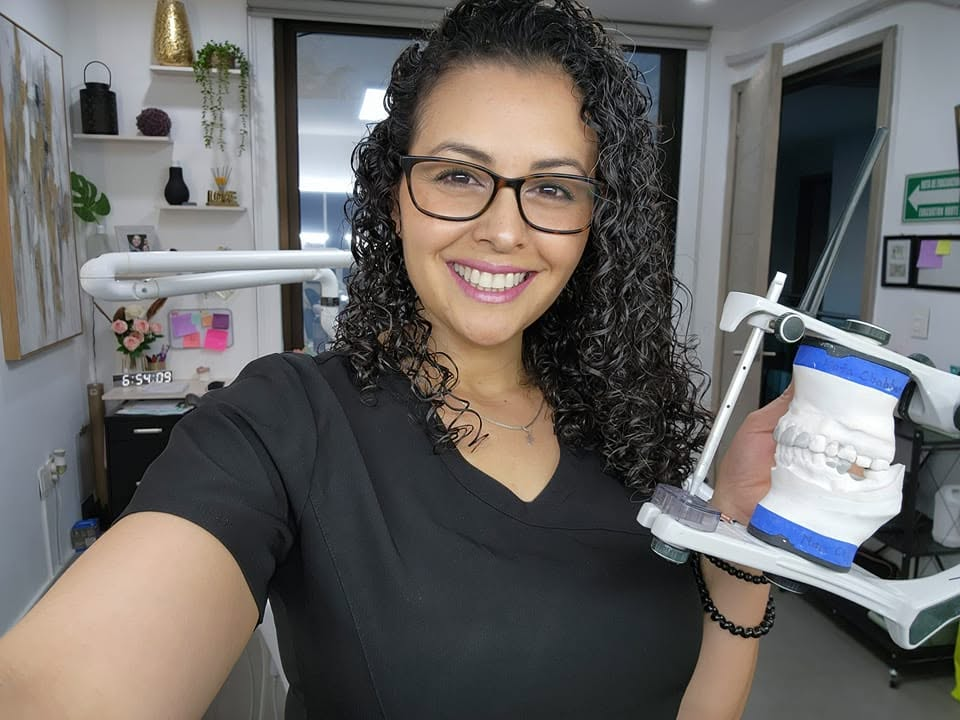
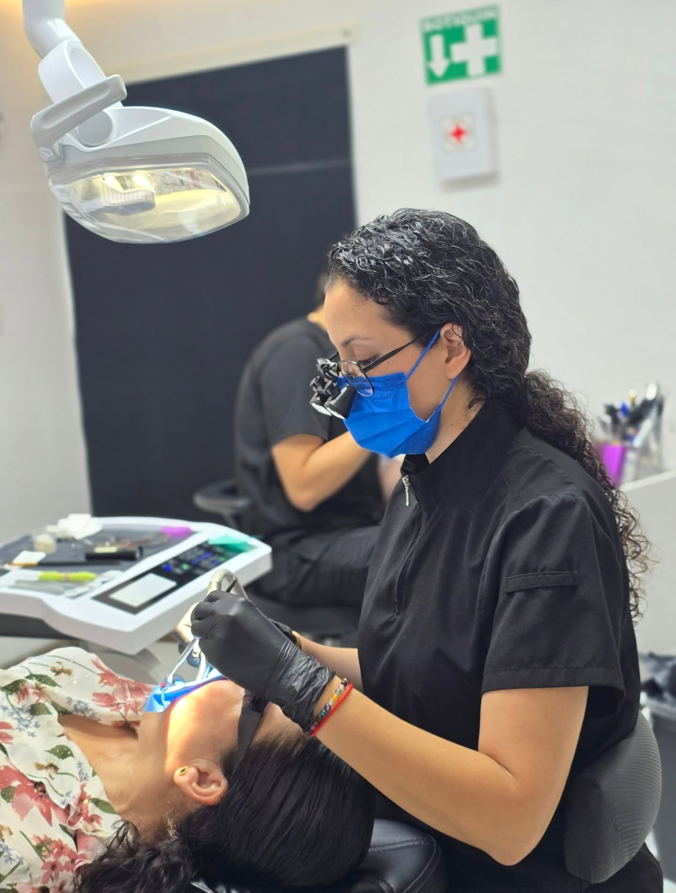
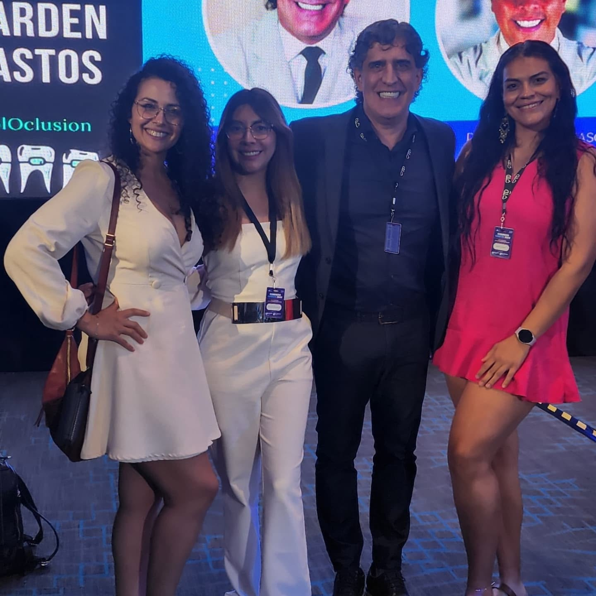
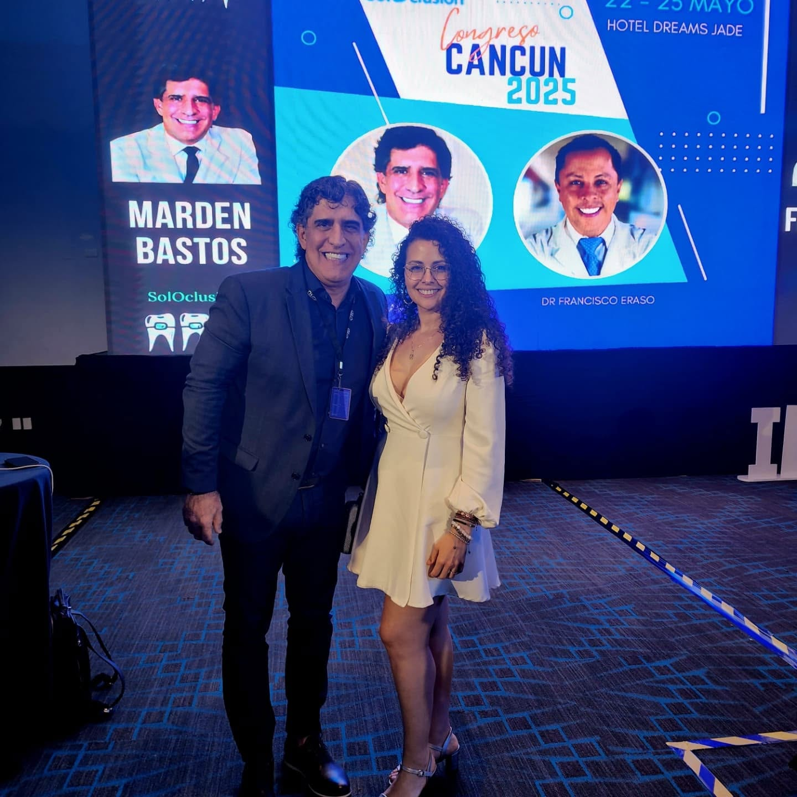
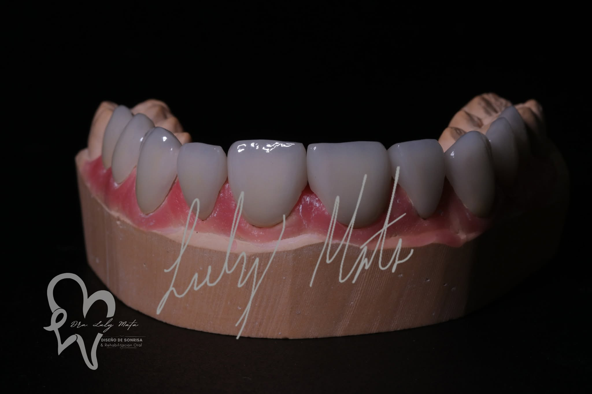
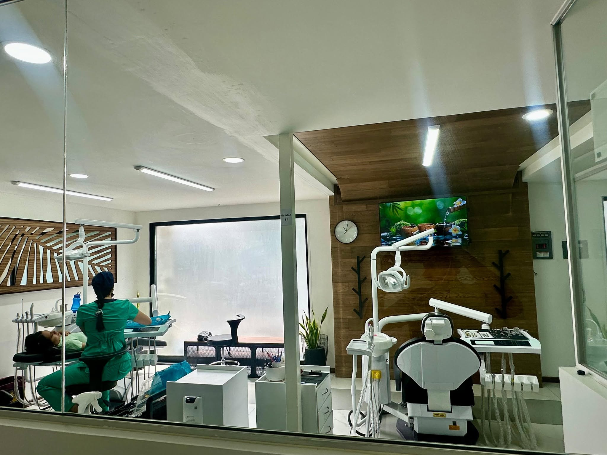
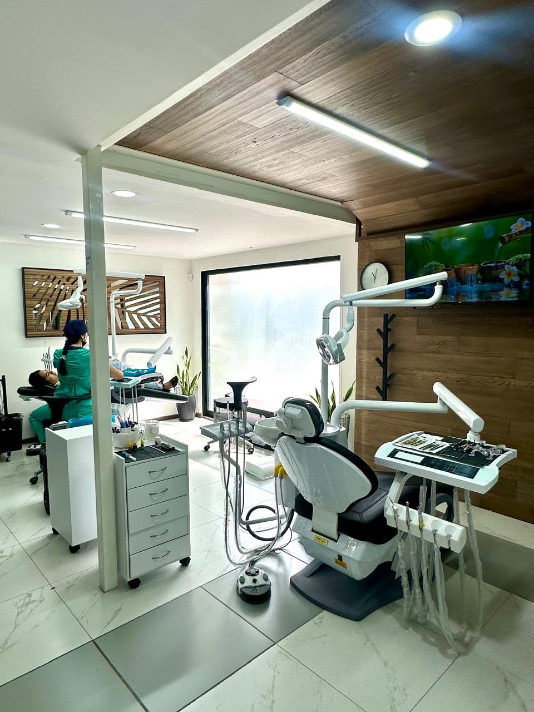

✨
Diseño de Sonrisa
Planeación estética integral para transformar tu sonrisa de forma natural y armónica.
Diseño de Sonrisa & Rehabilitación Oral · Guadalajara
Carillas de Emax, resinas estéticas, ortodoncia y rehabilitación oral en un consultorio moderno del centro de Guadalajara, con documentación fotográfica profesional en cada tratamiento.

Tratamientos
Un catálogo completo de odontología estética y rehabilitadora, pensado para cada etapa de tu sonrisa.
Planeación estética integral para transformar tu sonrisa de forma natural y armónica.
Láminas ultrafinas de porcelana para corregir forma, color y alineación sin desgaste excesivo.
Reconstrucción de dientes desgastados o con diastemas, sin desgaste dental.
Aclara el tono de tus dientes de forma segura y controlada en consultorio.
Alineación dental con brackets, con seguimiento fotográfico de cada etapa.
Corrección temprana del crecimiento óseo maxilar y mandibular.
Prótesis totales y parciales, inmediatas y definitivas, a la medida.
Profilaxis por ultrasonido para eliminar placa y sarro acumulado.
Extracciones simples realizadas con protocolos de bioseguridad.
Tratamiento de conductos para salvar piezas dentales dañadas o infectadas.

Sobre la doctora
Especialista en Rehabilitación Oral, Ortodoncia y Ortopedia Maxilar, con consultorio propio en Guadalajara desde donde combina precisión clínica con documentación fotográfica profesional de cada caso.
* Los datos marcados como "muestra" son ilustrativos para este prototipo y deben reemplazarse por la información oficial verificada antes de publicar el sitio.
📸 Todos los tratamientos se documentan con cámara profesional, para que puedas ver el proceso completo con transparencia y confianza.


Formación continua: Congreso SolOclusión, Cancún 2025.
Resultados reales
Casos documentados con fotografía clínica profesional.

Cada carilla se diseña y ajusta a la medida, cuidando forma, color y textura natural del diente.
El consultorio
Un espacio moderno, cómodo y equipado en el corazón de Guadalajara.


Pacientes reales
"Llevo más de 2 años yendo con la Dra. Luly. Ofrece un excelente servicio, desde resinas hasta ortodoncia, es muy profesional y amable."
— Mayra, reseña verificada en Google
"Desde la primera visita es muy clara con el diagnóstico y el tratamiento. Estoy muy contenta con los resultados que estoy teniendo."
— Mayra Gómez, reseña verificada en Google
"Me arreglé los dientes de manera estética y quedaron bonitos y naturales."
— Reseña verificada en Google
Síguenos
Visítanos
📍 Amado Nervo 697, Col. Ladrón de Guevara,
44600 Guadalajara, Jalisco.
| Lunes | Cerrado |
| Martes | 9:00 a. m. – 8:00 p. m. |
| Miércoles | 9:00 a. m. – 8:00 p. m. |
| Jueves | 9:00 a. m. – 8:00 p. m. |
| Viernes | 9:00 a. m. – 8:00 p. m. |
| Sábado | 9:00 a. m. – 5:00 p. m. |
| Domingo | Cerrado |
Agenda tu valoración y descubre el tratamiento ideal para ti.
Agendar por WhatsApp